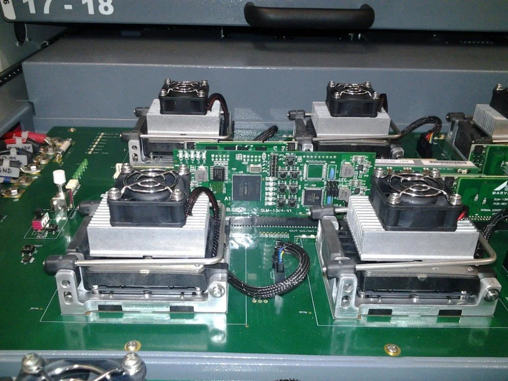
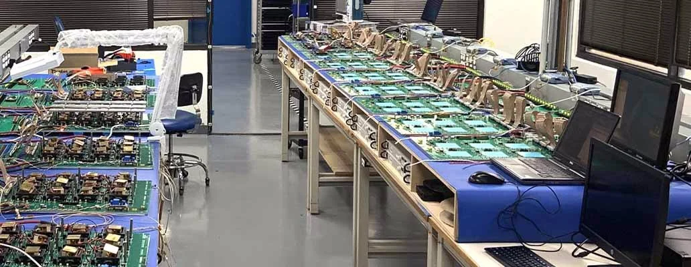
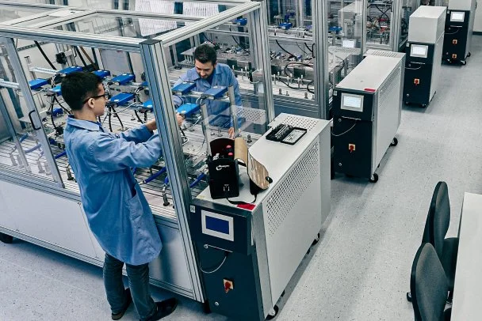
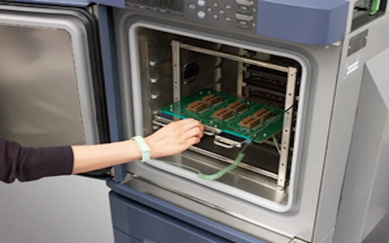
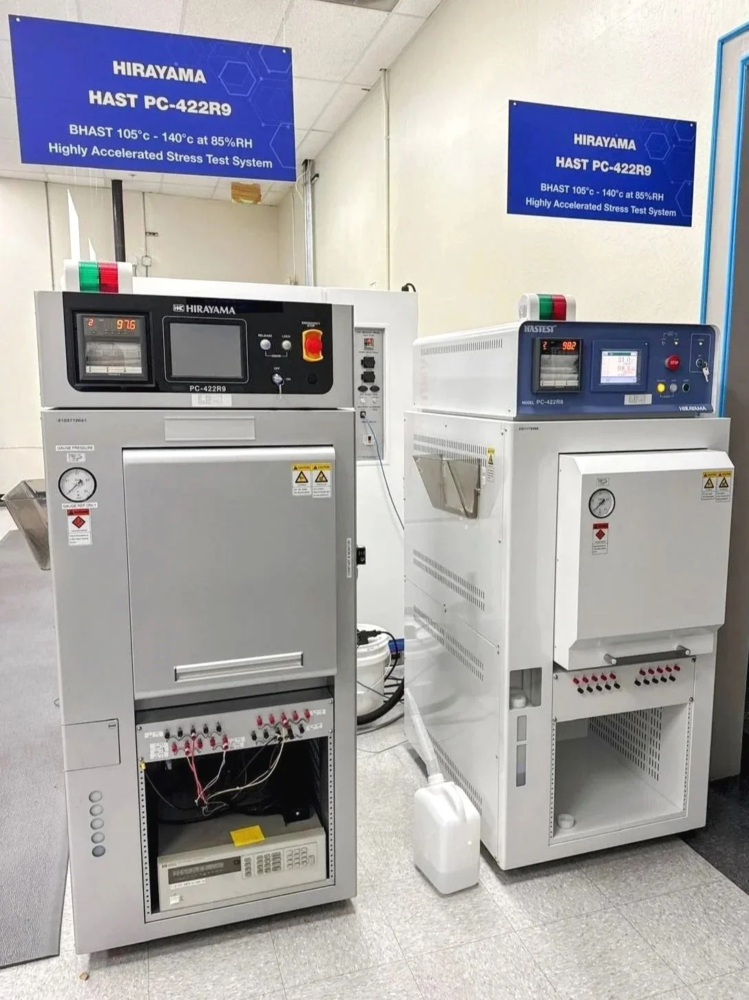

Conducted at Tj ≥ 125°C with Vcc at or above maximum rated voltage for 1,000 hours, HTOL accelerates thermally activated failure mechanisms — including gate oxide degradation, hot-carrier injection, electromigration, and interface-state generation. Using an Arrhenius-based acceleration model, results are used to calculate activation energies, failure rates in FITs (failures per 10⁹ device-hours), and projected field reliability at use temperature.

As device geometries shrink below 65nm, Hot Carrier Injection (HCI) becomes a dominant failure mechanism at low temperatures. LTOL applies Tj ≤ −40°C or −55°C with Vcc ≥ Vccmax for 1,000 hours, targeting HCI-induced threshold voltage shift and transconductance degradation. Increasingly specified for automotive, aerospace, and industrial applications where devices operate continuously in sub-zero environments.
Derived from the "bathtub curve" model, ELFR targets the infant mortality region — a phase of rapidly decreasing failures caused by latent process defects. Devices are stressed at Tj ≥ 125°C for 48–168 hours (per JESD74), and failure data is used to establish PPM reject rates and validate burn-in screening effectiveness before product ships to automotive or high-reliability customers.
A specialized variant of HTOL designed for GaAs, GaN, and silicon-based RF devices. Applied RF bias replicates real-world stress on power amplifier modules (PAMs), switches, transceivers, tuners, and LNAs. Critical for 5G mmWave and sub-6GHz qualification, where RF-specific failure modes — gain compression, intermodulation distortion drift, and thermal runaway — demand dedicated test vectors beyond standard HTOL protocols.

PTC subjects devices to repetitive transitions between temperature extremes while periodically applying and removing operational bias, simulating the on/off thermal cycling of real-world power electronics. The test identifies delamination, solder joint fatigue, wire bond lift-off, and die-attach voiding — failure modes that develop over thousands of thermal cycles in automotive inverters, industrial motor drives, and power management ICs.

Also known as H³TRB, THB applies 85°C / 85% RH with voltage bias for 1,000 hours per JESD22-A101, accelerating moisture-induced corrosion, ionic contamination, and electrochemical migration. Performed after preconditioning (JESD22-A113), it validates hermetic seal integrity and passivation layer robustness — essential for outdoor power modules, EV charging systems, and industrial sensor ICs exposed to condensing environments.

HAST uses supersaturated steam at 110–140°C and 85–100% RH in a pressurized chamber — BHAST (biased) or uHAST (unbiased) — achieving in 96–110 hours what standard THB achieves in 1,000 hours. Per JESD22-A110, it evaluates non-hermetic package robustness against moisture penetration, corrosion, and dielectric breakdown, dramatically compressing qualification timelines without sacrificing statistical confidence or result traceability.
Ensure the reliability and performance of your electronic components with our accredited semiconductor testing services. We provide the qualification data you need to meet industry standards and prevent costly field failures.